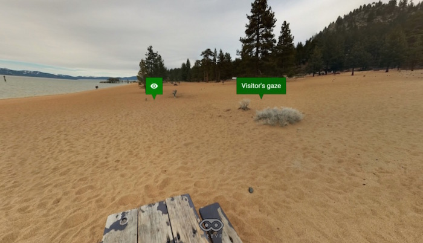

PhotoVRSE: hyper photospheres
Today's web is still fundamentally a series of interlinked hypertext documents. But web pages in virtual reality are as out of place as a terminal emulator windows in a graphical user interface. Both are windows into a very different world. So what is the hypertext equivalent for Virtual Reality?
Photosphere as primitive
The screens we interact with are fantastic at rendering text. And, a lot of the time you spend on your devices is spent reading: emailing, texting and chatting, reading ebooks, blogs, the news. Of course, the web allows for a much richer media experience through embedded content, that's the "hyper" part of hypertext (more on that later). Even though it's hyper, it's still mostly just text!
While you're reading this post on your device, you are immersed in text. But turn off your screen and step outside (really, I recommend it), and you'll see that text is a very small part of what you see. Our goal here is to create something that is fitting for virtual reality, so we need something that better represents the real world. Text cannot be the underlying substrate.
What, then, is the "minimum viable" substrate for virtual reality? How about the photosphere! Rather than text pages, the basis of a VR web page can be a photosphere of absolutely anything. It might be something that is captured using your smartphone, like one I took at an Anechoic Chamber at Google, or using specialized hardware like the Ricoh Theta, which I took inside my amazing car. It might even be something from a virtual environment like these in-game photospheres.
Add a separate image for your other eye, and you have a stereo photosphere suitable for consumption in VR. Animate the image and suddenly you are in a stereo 360 videosphere.
Hyper-photospheres
Just like text, the photosphere can be enriched with other types of media on top: images, video, audio, and even textual annotations. This mars photosphere has several images embedded in it:
This is what makes the web great
Just like hypertext, hyper-photospheres can enjoy all of the benefits of the web. You can link from one photosphere to other places in the photovrse. You can also embed photospheres in regular pages, as in this example:

Last but not least, thanks to WebVR boilerplate, you can view these photospheres on any device. It works on desktop, with or without an Oculus Rift, on mobile in a magic window by default, or in VR if you have a Cardboard headset. Both Android and iOS are supported.
The photovrse prototype
All of the photospheres mentioned above were shown using PhotoVRSE, a hyper-photosphere browser implemented using WebGL. Project is hosted on GitHub.
Each photosphere is represented as JSON, in a .vrse file. You can make
your own hyper photosphere by just creating and hosting a .vrse file
anywhere on the web. Here are the contents of an example
file hosted at http://photovrse.com/examples/mars.vrse. To render this
or any other vrse file, open it using the photovrse renderer at
http://photovrse.com/?url=http://photovrse.com/examples/mars.vrse.
{
"title": "Mars",
"image": "examples/mars/mars.jpg",
"preview": "examples/mars/preview.jpg",
"isStereo": false,
"audio": "examples/mars/dawn_chorus.mp3",
"labels": [{
"phi": 2.36,
"theta": 0.25,
"image": "examples/mars/mars_olympus.jpg",
"title": "Olympus Mons"
}, {
"phi": 0.61,
"theta": -0.11,
"image": "examples/mars/mars_rover.jpg",
"title": "The Opportunity Rover"
}]
}
Here you see some basic metadata about the photosphere: its title, the preview image URL and the full URL, whether or not it's stereo, and all of the labels, their content and titles. This photosphere also contains a musical loop of ambient sound.
Label types
Each label has several mandatory fields: two euler angles in radians
(phi and theta), a title description of the scene, and the content
that it points to. These labels are rendered as distinct green markers,
and on desktop, can be interacted by clicking on them. In general,
however, clicking may not be available, so they can be activated by
gazing at them for a prolonged period.
The following label types are currently supported:
Image labels show an image overlay.
{
"phi": 0.61,
"theta": -0.11,
"image": "examples/mars_rover.jpg",
"title": "The Opportunity Rover"
}
Link labels take you to a different photosphere.
{
"href": "http://photovrse.com/examples/video.vrse",
"phi": 0,
"theta": 1
}
Back labels take you back to the previous photosphere. The following example makes a back link on the floor directly below you.
{
"back": true
"phi": 0,
"theta": -1.5708
}
Textures, server-side tiling, stereo and video
Photospheres are usually huge files, both in bytes and in dimensions. A typical one generated by the Google Photosphere camera is 5 MB and 7168 x 3584. This presents certain challenges on the web. To view the photosphere in situ, these large images serve as textures that are projected onto a sphere.
Previews: Loading a 5MB file takes some time, so photovrse lets you provide a smaller, lower quality preview image which can be loaded quickly.
Texture sizing: In general, 3D graphics environments have texture size limits. In WebGL, this size limit can be extracted programatically, like this:
var gl = canvas.getContext('webgl');
this.maxTextureSize = gl.getParameter(gl.MAX_TEXTURE_SIZE);
Using very large textures is often problematic, though, and leads to strange artifacts especially in my testing on iOS. On Android too, I've found (empirically) that they slow things down. It seems faster to split textures into chunks using a canvas (see ImageUtil) and then load them into spherical triangles. I currently split all textures into tiles of 1024 x 1024, which seems to do pretty well.
For optimal mipmapping, texture sizes should be a power-of-two, which means that it's often better to resize the original images to that size.
Server tiling But chunking images is hard work. Especially if you're
a smartphone. Ideally, we should be able to do this work elsewhere!
I've provided a script to split an image into tiles to do
this. Also, photovrse supports tiled images with the following changes
in the .vrse file:
{
"image": "examples/tiled",
"isTiled": true,
"tileDimensions": [4, 8],
}
Rather than providing a .jpg, you provide a directory which contains
multiple images (in this case 4x8 = 32) in the format
tile_{{row}}_{{column}}.jpg.
Stereo By convention (there's not much of it yet), stereo photospheres are stored stacked, with the left eye image on top of the right one. The one test video I saw had the left rectilinear video on the left, and the right one on the right. It's a matter of convention and doesn't really matter, but this is the way photovrse handles it.
{kind=link}
Stereo video in iOS Unfortunately iOS doesn't support video
textures, since Safari forces all <video> elements into a
separate native view. So, no stereo video for iOS users yet.
Visitor gaze tracking
For prototyping purposes, I've been using Firebase for hosting the metadata JSON of a photosphere. Of course, the real point of Firebase is real-time updates, and if multiple people are present in the same photosphere, we can show where everyone is looking in real time:
